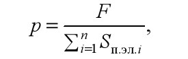

Бумага, как и другие запечатываемые материалы, имеет неровную поверхность. На рис. 42 представлена типичная профилограмма поверхности бумаги, из которой видно, что бумага имеет неровности разной высоты h и протяженности l.
Величина площадей неровностей на поверхности бумаги бывает соизмерима с площадью печатающих элементов, а иногда превышаетих величину. Высота неровностей поверхности различна в зависимости от типа печатной бумаги: для мелованной бумаги она может составлять 5−7 мкм, а для бумаги высокой печати - 25−30 мкм. При таком неровном рельефе бумаги невозможно передать на нее краску со всей поверхности печатающих элементов формы. Чтобы добиться переноса изображения с формы на бумагу, поверхность бумаги должна быть выровнена настолько, чтобы обеспечить полный контакт ее повсей площади печатающих элементов.
Кроме того, чтобы переход краски на бумагу осуществлялся в нужных количествах, а также чтобы краска могла закрепиться на бумаге, проникая в ее микрорельеф и поры, недостаточно обеспечить лишь контакт печатной формы с бумагой. Необходимо создать условия прижима бумаги к форме с некоторым усилием. Величина этого усилия, создающего нужное давление печатания, в большой мере зависит от способа печати, от продолжительности контакта формы и бумаги, от шероховатости и жесткости бумаги и других факторов.
Например, чем меньше жесткость бумаги и выше гладкость ее поверхности, тем меньшее давление требуется для создания условий перехода краски на бумагу в нужных количествах.
Таким образом, давление печати необходимо:
1) для сглаживания неровностей на поверхности запечатываемой бумаги, чтобы обеспечить полный контакт печатающих элементов формы с бумагой;
2) для переноса краски с формы на бумагу в необходимых количествах;
3) для обеспечения начального закрепления краски путем внедрения ее в микрорельеф и поры бумаги.
Рассмотрим понятие давления для высокой, офсетной и глубокойпечати.
В офсетной печати печатающие и пробельные элементы расположены практически в одной плоскости, в глубокой печатающие углублены по отношению к пробельным, но заполнены практически несжимаемой краской, что создает также как бы единую поверхность формы. Под давлением печатания в этих способах будем понимать силу, приходящуюся на единицу площади полосы контакта, включающей как печатающие, так и пробельные элементы.
В высокой печати под давлением будем понимать силу, приходящуюся только на единицу площади печатающих элементов в полосе контакта, так как пробельные элементы расположены ниже печатающих и не должны испытывать давление при печати.
На рис. 43 показана ширина полосы контакта h при разном коэффициенте заполнения отдельных участков формы офсетной и глубокой печати. Как видно из рис. 43, a, б, ширина полосы контакта, а, следовательно, и площадь полосы контакта Sп.к для каждого из этих способов печати не зависит от числа печатающих элементов на ней:ha1 = ha2, hb1 = hh2.
В высокой печати (рис. 43, в) ширина hc1, hc2 и площадь полосы контакта зависят от числа и площади печатающих элементов, находящихся в зоне печати. Суммарная их площадь в полосе контакта, а, следовательно, и площадь полосы контакта не являются постоянной величиной (hc1 ≠ hc2).
Для способов офсетной и глубокой печати давление будет определяться по формуле
| (18) |
где р - давление печати, Па = Н/м2, F — суммарная сила, действующая на полосе контакта, Н.
Для способа высокой печати:
|  | (19) |
где  - суммарная площадь печатающих элементов в полосе контакта.
- суммарная площадь печатающих элементов в полосе контакта.
К давлению печатания предъявляются два основных требования:
1) для передачи слоя краски одинаковой толщины с каждого печатающего элемента формы на бумагу давление печатания должно быть одинаковым по всей площади печатной формы;
2) величина давления должна быть неизменной на всем протяжении печатания тиража.